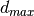
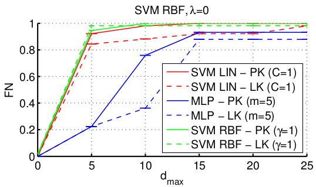
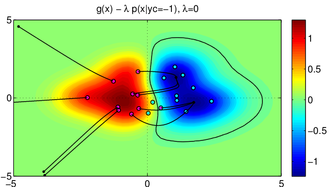
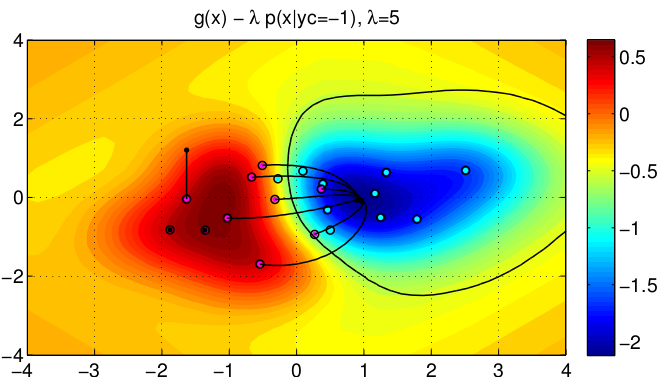
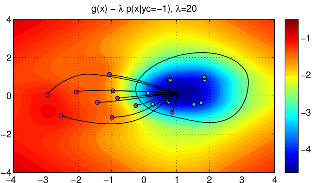
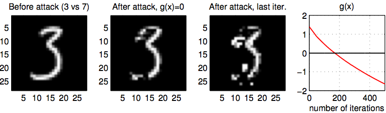

Authors: Igino Corona, Battista Biggio, Davide Maiorca, Pattern Recognition and Applications Lab, Dept. of Electrical and Electronic Engineering, University of Cagliari, Italy.
In security-sensitive applications, the success of machine learning depends on a thorough vetting of their resistance to adversarial data. In one pertinent, well-motivated attack scenario, an adversary may attempt to evade a deployed system at test time by carefully manipulating attack samples. In this work, we present a simple but effective gradient-based approach that can be exploited to systematically assess the security of several, widely-used classification algorithms against evasion attacks.
Following a recently proposed framework for security evaluation, we simulate attack scenarios that exhibit different risk levels for the classifier by increasing the attacker’s knowledge of the system and her ability to manipulate attack samples. This gives the classifier designer a better picture of the classifier performance under evasion attacks, and allows him to perform a more informed model selection (or parameter setting). We evaluate our approach on the relevant security task of malware detection in PDF files, and show that such systems can be easily evaded. We also sketch some countermeasures suggested by our analysis.
Full paper: Biggio B., Corona I., Maiorca D., Nelson B., Srndic N., Laskov P., Giacinto G., Roli F., Evasion attacks against machine learning at test time, in European Conference on Machine Learning and Principles and Practice of Knowledge Discovery in Databases* (ECML-PKDD 2013), Prague, Czech Republic, 2013.
In the following we describe how to replicate the experiments described in the above research paper. We also describe how to customize or create new experiments for other “adversarial” evaluations, through a rich set of examples (to this end, please visit also the adversariaLib page). This document is released together with our open-source library adversariaLib: a general-purpose library for the security evaluation of machine learning algorithms, which has been used for the experimental evaluation of the attacks described in the paper. Thus, our aim is not only allowing other researchers to replicate the experiments in our paper but also:
In order to replicate the experiments described in the paper, it is necessary to:
install Matlab: we experimented with the version R2012 and higher.
We found a problem when using Matlab on Ubuntu 13.04 for 64bit architectures (that may also occur for 32bit arch.). In particular, the library libgfortran.so.3 is not properly loaded from Matlab. Here’s the solution.
- Locate the Matlab’s dynamic library libgfortran.so.3:
- Look at the files related to the libgfortran package:
- Override the Matlab’s dynamic library:
NOTE: replace the first and the second path with the ones found in your case!
download the whole package containing both adversariaLib and all Matlab code employed for our experiments.
follow all steps described in the installation section of adversariaLib
We firstly provide a simple experiment that is useful for testing purposes. Simply open the file main.m (within the matlab folder) and run the script. It will launch the experiment defined inside the exp_example folder, i.e., a gradient descent attack against Support Vector machines (both linear and with RBF kernel) and Multi-Layer Perceptron (aka Artificial Neural Network) with a single output and hidden layer. The dataset is the same used for our evaluation on a real PDF malware detector, described in the paper. In particular, both perfect (PK) and limited knowledge (LK) settings are evaluated.
The output of the experiment consists of a single plot (check out the exp1/fig folder) where, for each classifier, we display how the False Negative (FN) rate changes with the increasing of , i.e., the maximum number of PDF name objects that can be added to a malicious PDF document:
NOTE: Make sure that the path of the python interpreter and the pyfann library are set correctly. You can set them by operating on the setenv() function inside main.m. AdversariaLib is multi-processing enabled. If you want more threads to be executed, you can change the exp_params.threads value within the configuration file and set it accordingly to the number of processes to be used concurrently. If you use -1, all CPUs will be used for the computations.
The matlab-examples/main_2d.m script provides the Matlab code for replicating the experiment on an Artificial dataset composed by bi-dimensional patterns reported in our paper. In order to run this simulation:
The MATLAB code produces 2D plots similar to those reported in Fig.1 of our paper:
  The matlab-examples/main_mnist.m script provides the Matlab code (and data) for replicating the toy experiment on the MNIST Database of Handwritten Digits reported in our paper. In order to run this simulation:
A plot showing the effect of a Gradient Descent Attack on a Handwritten Digits Recognition system will be generated:
Simply open main.m within the matlab folder, and set setup_folder = "exp_paper_ecml". Run the script. If you set make_exp = 1, the whole experiment will be executed and the results will be saved in the results folder, inside each exp folder within the exp_paper_ecml folder. If you have already perfomed the exp_paper_ecml experiment, you can set make_plots = 1 to display the plots. They will be saved within the fig folder within each exp folder of the experiment.
Experiments can be also executed in background with make_exp = 1 and make_plots = 0, through the shell command:
$ nohup matlab < main.m > output.txt &
We also provide our computed results as a compressed archive exp_paper.tar.gz. You may just rename or remove the current exp_paper_ecml folder, and uncompress the archive. It will create again the folder ‘exp_paper_ecml’, including the results of our experiments. Therefore, you may just set make_exp = 0 and leave make_plots = 1 to generate the corresponding plots.
We tested our Matlab/adversariaLib scripts on Apple Mac OS X 10.8.4 and Ubuntu 13.04 (64 bits).
Each experiment is defined through a file whose name has the following format: set_params_xxx.m. Each file is used to generate a setup.py file according to the adversariaLib syntax. In the following we report the contents of set_params_example.m, that can be considered as a matlab template for the definition of new experiments:
exp_params.dataset_name = 'norm_pdf_med';
exp_params.test_fraction = 0.1; %fraction of randomly chosen test data (the rest will be used for training)
exp_params.nfolds = 3; %number of folds for cross validation
exp_params.nsplits = 1; %number of splits
exp_params.threads = 1; %number of threads (note: if you set -1 it will use all the processors)
exp_params.norm_weights = 'norm_weights.txt'; %normalization parameters for the PDF data.
exp_params.fig_folder = 'fig'; %in this folder (inside each experiment folder) the plot will be saved
exp_params.code_folder = '../adversariaLib'; % This is the relative path to the adversarialib code folder
exp_params.dataset_folder = '../../../../../dataset'; %This is the folder in which the dataset is stored
classifier_params.classifier = 'SVM_lin'; % 'SVM_rbf' or 'MLP'
classifier_params.xval=0;
classifier_params.mlp_steepness = 0.0005;
classifier_params.neurons = 5;
classifier_params.svm_C = 1;
classifier_params.svm_gamma = 1;
evil_classifier_params.training_size = 100;
evil_classifier_params.num_rep = 1; %Number of classifier's copies to learn by randomly sampling a training set
evil_classifier_params.classifier = classifier_params.classifier;
evil_classifier_params.xval= classifier_params.xval;
evil_classifier_params.mlp_steepness = classifier_params.mlp_steepness;
evil_classifier_params.neurons = classifier_params.neurons;
evil_classifier_params.svm_C = classifier_params.svm_C;
evil_classifier_params.svm_gamma = classifier_params.svm_gamma;
mimicry_params.mimicry_distance = 'kde_hamming';
mimicry_params.lambda = 0;
mimicry_params.kde_gamma = 0.1;
mimicry_params.max_leg_patterns = 100;
constraint_params.constraint = 'only_increment'; %Choose between: box, hamming, only_increment
constraint_params.constraint_step = 5;
constraint_params.max_boundaries = 10;
plot_params.title=['SVM (Linear)' ...
', \lambda=' num2str(mimicry_params.lambda)]; %Set up plot title
plot_params.legend_lk = ['SVM LIN' '- LK' ' (C=' num2str(classifier_params.neurons) ')']; %Set up legend for lk
plot_params.legend_pk = ['SVM LIN' '- PK' ' (C=' num2str(classifier_params.neurons) ')']; %Set up legend for pk
plot_params.color = 'r';
gradient_params.grad_step = 0.01;
Please note that almost all parameters are associated to parameters of a adversariaLib setup.py file (the parameters of surrogate classifiers are defined through the evil_classifier_params structure). The unique matlab-dependent parameters are as follows:
exp_params.fig_folder = 'fig';
exp_params.code_folder = '../adversariaLib';
plot_params.title=['SVM (Linear)' ...
', \lambda=' num2str(mimicry_params.lambda)]; %Set up plot title
plot_params.legend_lk = ['SVM LIN' '- LK' ' (C=' num2str(classifier_params.neurons) ')']; %Set up legend for lk
plot_params.legend_pk = ['SVM LIN' '- PK' ' (C=' num2str(classifier_params.neurons) ')']; %Set up legend for pk
plot_params.color = 'r';
Here follows a description of each one of the above settings:
exp_params.fig_folder sets the default folder for the figures of an experiment;
exp_params.code_folder relative path to the adversariaLib code;
classifier_params.xval tells the matlab script for the generation of adversariaLib setups to use (if 1) or not (if 0) cross-validation for finding the best classifier’s parameters. In particular, if classifier_params.xval = 1, here are the default adversariaLib settings:
- for linear SVMs: 'grid_search': {'param_grid': dict(C=np.logspace(-3, 2, 6))}
- for RBF kernel SVMs: 'grid_search': {'param_grid': dict(C=np.logspace(-3, 2, 6), gamma=np.logspace(-3, 3, 7))}
such settings can be changed in the Matlab script utils/setup_write_classifier_params.m.
plot_params.title sets the title of the plot; in this case, classifier type and lambda parameter are displayed;
plot_params.legend_lk sets the legend of the (solid) curve related to Limited Knowledge (LK);
plot_params.legend_pk sets the legend of the (dashed) curve related to Perfect Knowledge (PK);
plot_params.color sets the color of the curve.
Please use the forum on the official repository of adversariaLib.